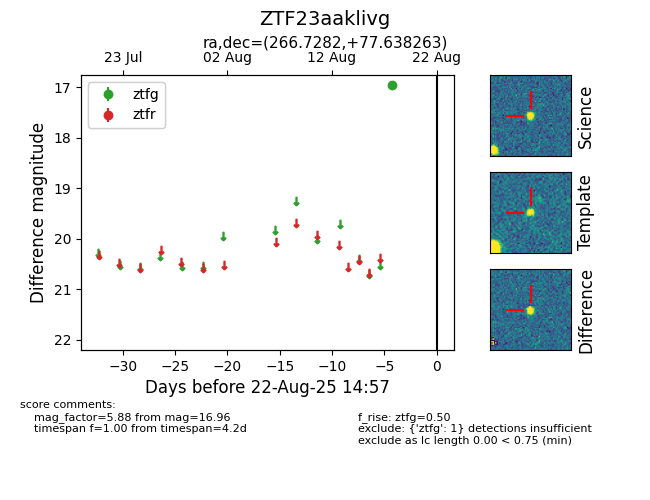

Target ZTF23aaklivg at 2025-08-22 15:31, see:
FINK: fink-portal.org/ZTF23aaklivg
Lasair: lasair-ztf.lsst.ac.uk/objects/ZTF23aaklivg
ALeRCE: alerce.online/object/ZTF23aaklivg
alt names
ZTF23aaklivg (ztf,alerce)
coordinates:
equatorial (ra, dec) = (266.7282,+77.63826)
galactic (l, b) = (109.2101,+29.89084)
photometry
last ztfg=16.96
1 ztfg detections
